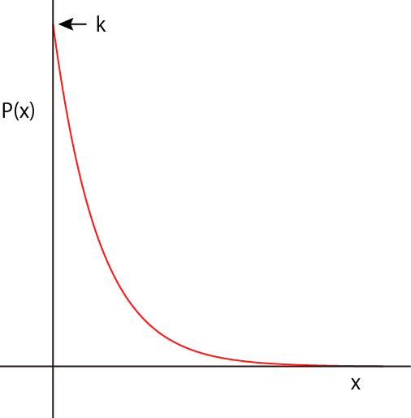

ランダムな数の発生方法-03
２．指数分布
では，指数分布をしているを考えていきましょう．

\(\Large P(x) \propto e^{-k x} \)
規格化条件は，
\(\Large 1 = \int_0^\infty P(x) dx = \int_0^\infty A e^{-k x} dx \)
となります．従って，
\(\Large \begin{eqnarray} 1 &=& A \int_0^\infty e^{-k x} dx \\
&=&
- \frac{A}{k} \left[ e^{-k x} \right]_0^\infty \\
&=&
- \frac{A}{k} \left[ 0-1 \right] \\
&=&
\frac{A}{k} \\
\end{eqnarray} \)
\(\Large A = k\)
\(\Large P(x) = k \ e^{-k x} \)
となります．
累積密度関数は，
\(\Large \begin{eqnarray} \int_0^x P(m) dm &=& \int_0^\infty k \ e^{-k m} dm \\
&=&
k \ \left( - \frac{1}{k} \right) \left[ e^{-k m} \right]_0^x \\
&=&
- \left[ e^{-k x}-1 \right] \\
&=&
1 - e^{-k x} \\
\end{eqnarray} \)
となります．
従って，P(x)に0から１の乱数を与えれば，その数に応じたｘの値が求まります．
\(\Large Rand_{0-1} = 1 - e^{-k x} \)
\(\Large e^{-k x} = 1 - Rand_{0-1} \)
対数をとれば，
\(\Large -k x =ln \left(1 - Rand_{0-1} \right) \)
ここで， 1-Rand0-1は結局，Rand0-1 となるので，（Randが0.2の場合，1-Randは0.8となるように）
\(\Large -k x =ln \left( Rand_{0-1} \right) \)
\(\Large x =- \frac{1}{k} ln \left( Rand_{0-1} \right) \)
となります．
累積積分は基本的には０から開始するものであるので，累積積分においては不定積分として，計算しても同じ答えとなると思います．（証明はしていませんが．．．）
このように，指数分布の場合には，積分しても最初の確率密度と同じ関数となりますが，累積密度関数にするところがポイントです．
つぎに，正規分布を考えていきましょう．